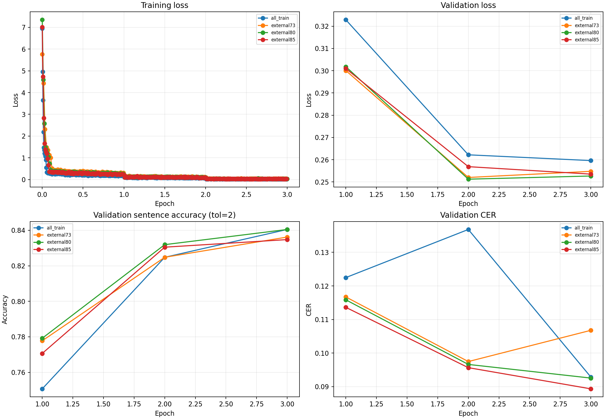
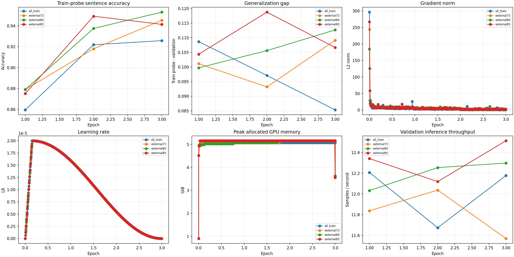
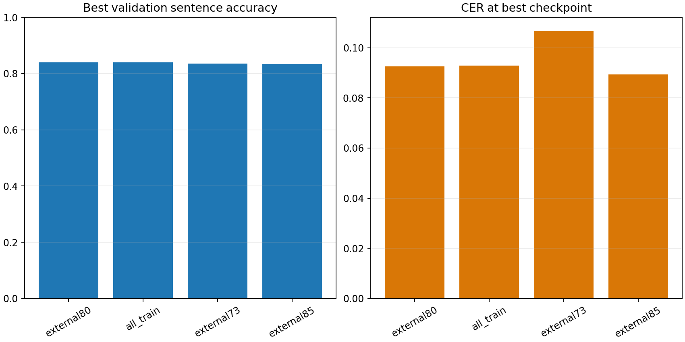
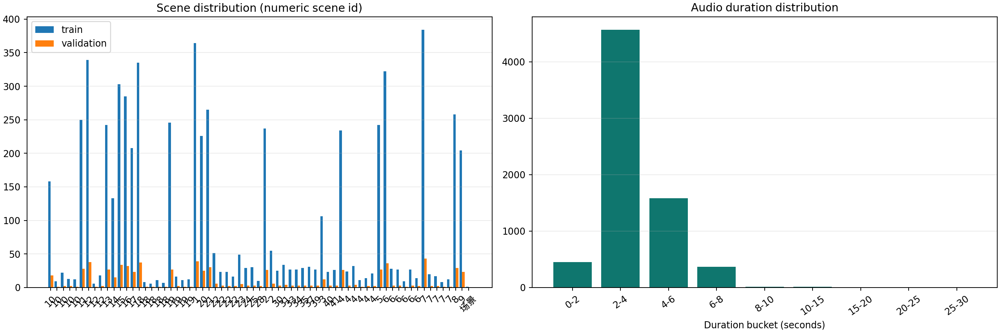
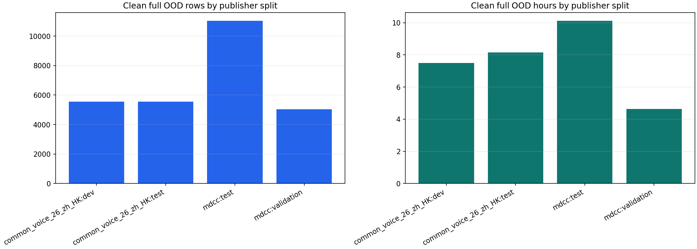
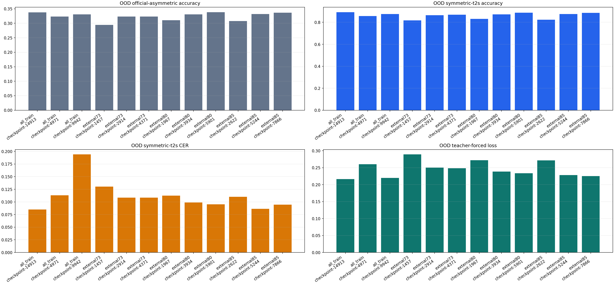

| trial | stage | comparable_validation | best_epoch | global_step | sentence_accuracy_tol2 | cer | validation_loss | train_probe_accuracy | gpu_peak_allocated_gb | elapsed_seconds | slurm_job_id | metrics_path |
|---|---|---|---|---|---|---|---|---|---|---|---|---|
| external80 | experiment | True | 3.0 | 5901 | 0.8404558404558404 | 0.09256092347156905 | 0.2526870667934418 | 0.953125 | 3.5643320083618164 | 2801.368188917055 | 981 | outputs/external-round3/external80/metrics.jsonl |
| all_train | experiment | True | 3.0 | 14913 | 0.8404558404558404 | 0.09288157332193245 | 0.2596170902252197 | 0.92578125 | 3.5618906021118164 | 6621.531060482957 | 979 | outputs/external-round3/all_train/metrics.jsonl |
| external73 | experiment | True | 3.0 | 4371 | 0.8361823361823362 | 0.10677640017101325 | 0.25478702783584595 | 0.9453125 | 3.5511484146118164 | 2180.6870353670092 | 980 | outputs/external-round3/external73/metrics.jsonl |
| external85 | experiment | True | 3.0 | 7866 | 0.8347578347578347 | 0.08935442496793501 | 0.25352850556373596 | 0.94140625 | 3.56209659576416 | 3620.667444509105 | 982 | outputs/external-round3/external85/metrics.jsonl |
| trial | checkpoint | split | num_samples | sentence_accuracy_tol2 | sentence_accuracy_exact | cer | symmetric_t2s_sentence_accuracy_tol2 | symmetric_t2s_cer | teacher_forced_loss | target_tokens | manifest_sha256 | generation_max_length | metrics_path |
|---|---|---|---|---|---|---|---|---|---|---|---|---|---|
| all_train | checkpoint-14913 | ood_panel | 2000 | 0.3375 | 0.039 | 0.34208888335615584 | 0.8925 | 0.08498277936843852 | 0.2164983358828601 | 36505 | 1ab5f1547bc7c93713e99bfb749e1359ed97e98dd8258bf448656da53abb6450 | 225 | outputs/external-round3/all_train/diagnostics/checkpoint-14913/ood_panel/metrics.json |
| all_train | checkpoint-14913 | train_probe | 256 | 0.92578125 | 0.76171875 | 0.1582050442188012 | None | None | 0.05973251267592745 | 5277 | d51ee5e812f2ff48a9a87ea4a00a969df32f83fdc51438adc72a01962ad72a0b | 225 | outputs/external-round3/all_train/diagnostics/checkpoint-14913/train_probe/metrics.json |
| all_train | checkpoint-14913 | validation | 702 | 0.8390313390313391 | 0.4373219373219373 | 0.09309533988884139 | None | None | 0.26037654015662404 | 16082 | 8c2310529ae8d257cb9612dc85797aff5952a5b2b6078cd146db486daf9eee4a | 225 | outputs/external-round3/all_train/diagnostics/checkpoint-14913/validation/metrics.json |
| all_train | checkpoint-4971 | ood_panel | 2000 | 0.323 | 0.036 | 0.35997344288144734 | 0.8575 | 0.1129922403419229 | 0.26028902048346864 | 36505 | 1ab5f1547bc7c93713e99bfb749e1359ed97e98dd8258bf448656da53abb6450 | 225 | outputs/external-round3/all_train/diagnostics/checkpoint-4971/ood_panel/metrics.json |
| all_train | checkpoint-4971 | train_probe | 256 | 0.859375 | 0.46484375 | 0.0894202423845398 | None | None | 0.23610857424465842 | 5277 | d51ee5e812f2ff48a9a87ea4a00a969df32f83fdc51438adc72a01962ad72a0b | 225 | outputs/external-round3/all_train/diagnostics/checkpoint-4971/train_probe/metrics.json |
| all_train | checkpoint-4971 | validation | 702 | 0.7521367521367521 | 0.33048433048433046 | 0.1221675929884566 | None | None | 0.32571235792418346 | 16082 | 8c2310529ae8d257cb9612dc85797aff5952a5b2b6078cd146db486daf9eee4a | 225 | outputs/external-round3/all_train/diagnostics/checkpoint-4971/validation/metrics.json |
| all_train | checkpoint-9942 | ood_panel | 2000 | 0.331 | 0.038 | 0.44715548363002616 | 0.8755 | 0.19411593842068137 | 0.2197538600786306 | 36505 | 1ab5f1547bc7c93713e99bfb749e1359ed97e98dd8258bf448656da53abb6450 | 225 | outputs/external-round3/all_train/diagnostics/checkpoint-9942/ood_panel/metrics.json |
| all_train | checkpoint-9942 | train_probe | 256 | 0.921875 | 0.6640625 | 0.245004913200131 | None | None | 0.09661119210577743 | 5277 | d51ee5e812f2ff48a9a87ea4a00a969df32f83fdc51438adc72a01962ad72a0b | 225 | outputs/external-round3/all_train/diagnostics/checkpoint-9942/train_probe/metrics.json |
| all_train | checkpoint-9942 | validation | 702 | 0.8262108262108262 | 0.40883190883190884 | 0.13820008550662677 | None | None | 0.26420695164090674 | 16082 | 8c2310529ae8d257cb9612dc85797aff5952a5b2b6078cd146db486daf9eee4a | 225 | outputs/external-round3/all_train/diagnostics/checkpoint-9942/validation/metrics.json |
| external73 | checkpoint-1457 | ood_panel | 2000 | 0.2945 | 0.035 | 0.3740404166147973 | 0.818 | 0.13021287190339847 | 0.2892184034012357 | 36505 | 1ab5f1547bc7c93713e99bfb749e1359ed97e98dd8258bf448656da53abb6450 | 225 | outputs/external-round3/external73/diagnostics/checkpoint-1457/ood_panel/metrics.json |
| external73 | checkpoint-1457 | train_probe | 256 | 0.875 | 0.4921875 | 0.08090402882410744 | None | None | 0.19405699978051863 | 5277 | d51ee5e812f2ff48a9a87ea4a00a969df32f83fdc51438adc72a01962ad72a0b | 225 | outputs/external-round3/external73/diagnostics/checkpoint-1457/train_probe/metrics.json |
| external73 | checkpoint-1457 | validation | 702 | 0.7749287749287749 | 0.349002849002849 | 0.11735784523300556 | None | None | 0.3020583618756121 | 16082 | 8c2310529ae8d257cb9612dc85797aff5952a5b2b6078cd146db486daf9eee4a | 225 | outputs/external-round3/external73/diagnostics/checkpoint-1457/validation/metrics.json |
| external73 | checkpoint-2914 | ood_panel | 2000 | 0.3235 | 0.04 | 0.358604091456077 | 0.865 | 0.1084692310884269 | 0.25017884696873716 | 36505 | 1ab5f1547bc7c93713e99bfb749e1359ed97e98dd8258bf448656da53abb6450 | 225 | outputs/external-round3/external73/diagnostics/checkpoint-2914/ood_panel/metrics.json |
| external73 | checkpoint-2914 | train_probe | 256 | 0.92578125 | 0.63671875 | 0.05535538814281035 | None | None | 0.08660991611592761 | 5277 | d51ee5e812f2ff48a9a87ea4a00a969df32f83fdc51438adc72a01962ad72a0b | 225 | outputs/external-round3/external73/diagnostics/checkpoint-2914/train_probe/metrics.json |
| external73 | checkpoint-2914 | validation | 702 | 0.8247863247863247 | 0.4358974358974359 | 0.09672937152629328 | None | None | 0.25307798296669026 | 16082 | 8c2310529ae8d257cb9612dc85797aff5952a5b2b6078cd146db486daf9eee4a | 225 | outputs/external-round3/external73/diagnostics/checkpoint-2914/validation/metrics.json |
| external73 | checkpoint-4371 | ood_panel | 2000 | 0.3235 | 0.038 | 0.3588115689447695 | 0.8685 | 0.10834474459521141 | 0.24843489800131724 | 36505 | 1ab5f1547bc7c93713e99bfb749e1359ed97e98dd8258bf448656da53abb6450 | 225 | outputs/external-round3/external73/diagnostics/checkpoint-4371/ood_panel/metrics.json |
| external73 | checkpoint-4371 | train_probe | 256 | 0.9453125 | 0.76953125 | 0.03537504094333443 | None | None | 0.04766564642996731 | 5277 | d51ee5e812f2ff48a9a87ea4a00a969df32f83fdc51438adc72a01962ad72a0b | 225 | outputs/external-round3/external73/diagnostics/checkpoint-4371/train_probe/metrics.json |
| external73 | checkpoint-4371 | validation | 702 | 0.8361823361823362 | 0.4415954415954416 | 0.1069901667379222 | None | None | 0.25578823689722985 | 16082 | 8c2310529ae8d257cb9612dc85797aff5952a5b2b6078cd146db486daf9eee4a | 225 | outputs/external-round3/external73/diagnostics/checkpoint-4371/validation/metrics.json |
| external80 | checkpoint-1967 | ood_panel | 2000 | 0.3105 | 0.0335 | 0.35906054193120046 | 0.8315 | 0.11245279887132247 | 0.2721681610262079 | 36505 | 1ab5f1547bc7c93713e99bfb749e1359ed97e98dd8258bf448656da53abb6450 | 225 | outputs/external-round3/external80/diagnostics/checkpoint-1967/ood_panel/metrics.json |
| external80 | checkpoint-1967 | train_probe | 256 | 0.8828125 | 0.43359375 | 0.0894202423845398 | None | None | 0.1995506091440449 | 5277 | d51ee5e812f2ff48a9a87ea4a00a969df32f83fdc51438adc72a01962ad72a0b | 225 | outputs/external-round3/external80/diagnostics/checkpoint-1967/train_probe/metrics.json |
| external80 | checkpoint-1967 | validation | 702 | 0.7834757834757835 | 0.33475783475783477 | 0.11564771269773408 | None | None | 0.3044387367646087 | 16082 | 8c2310529ae8d257cb9612dc85797aff5952a5b2b6078cd146db486daf9eee4a | 225 | outputs/external-round3/external80/diagnostics/checkpoint-1967/validation/metrics.json |
| external80 | checkpoint-3934 | ood_panel | 2000 | 0.331 | 0.042 | 0.3505954603925474 | 0.872 | 0.09888377111083448 | 0.23835850532635192 | 36505 | 1ab5f1547bc7c93713e99bfb749e1359ed97e98dd8258bf448656da53abb6450 | 225 | outputs/external-round3/external80/diagnostics/checkpoint-3934/ood_panel/metrics.json |
| external80 | checkpoint-3934 | train_probe | 256 | 0.93359375 | 0.69921875 | 0.04487389452997052 | None | None | 0.08474705276648294 | 5277 | d51ee5e812f2ff48a9a87ea4a00a969df32f83fdc51438adc72a01962ad72a0b | 225 | outputs/external-round3/external80/diagnostics/checkpoint-3934/train_probe/metrics.json |
| external80 | checkpoint-3934 | validation | 702 | 0.8290598290598291 | 0.4287749287749288 | 0.09737067122702009 | None | None | 0.2522016187728808 | 16082 | 8c2310529ae8d257cb9612dc85797aff5952a5b2b6078cd146db486daf9eee4a | 225 | outputs/external-round3/external80/diagnostics/checkpoint-3934/validation/metrics.json |
| external80 | checkpoint-5901 | ood_panel | 2000 | 0.3385 | 0.042 | 0.3481057305282377 | 0.888 | 0.0951491763143699 | 0.23362992885847186 | 36505 | 1ab5f1547bc7c93713e99bfb749e1359ed97e98dd8258bf448656da53abb6450 | 225 | outputs/external-round3/external80/diagnostics/checkpoint-5901/ood_panel/metrics.json |
| external80 | checkpoint-5901 | train_probe | 256 | 0.953125 | 0.765625 | 0.06780216180805765 | None | None | 0.04962038853775264 | 5277 | d51ee5e812f2ff48a9a87ea4a00a969df32f83fdc51438adc72a01962ad72a0b | 225 | outputs/external-round3/external80/diagnostics/checkpoint-5901/train_probe/metrics.json |
| external80 | checkpoint-5901 | validation | 702 | 0.8390313390313391 | 0.4458689458689459 | 0.09277469003847798 | None | None | 0.25417694217040016 | 16082 | 8c2310529ae8d257cb9612dc85797aff5952a5b2b6078cd146db486daf9eee4a | 225 | outputs/external-round3/external80/diagnostics/checkpoint-5901/validation/metrics.json |
| external85 | checkpoint-2622 | ood_panel | 2000 | 0.3075 | 0.036 | 0.35553342462342835 | 0.8235 | 0.1102950329889207 | 0.2716379961662465 | 36505 | 1ab5f1547bc7c93713e99bfb749e1359ed97e98dd8258bf448656da53abb6450 | 225 | outputs/external-round3/external85/diagnostics/checkpoint-2622/ood_panel/metrics.json |
| external85 | checkpoint-2622 | train_probe | 256 | 0.875 | 0.5 | 0.1166066164428431 | None | None | 0.20833107791255093 | 5277 | d51ee5e812f2ff48a9a87ea4a00a969df32f83fdc51438adc72a01962ad72a0b | 225 | outputs/external-round3/external85/diagnostics/checkpoint-2622/train_probe/metrics.json |
| external85 | checkpoint-2622 | validation | 702 | 0.7763532763532763 | 0.3732193732193732 | 0.11201368106028217 | None | None | 0.30316138958370575 | 16082 | 8c2310529ae8d257cb9612dc85797aff5952a5b2b6078cd146db486daf9eee4a | 225 | outputs/external-round3/external85/diagnostics/checkpoint-2622/validation/metrics.json |
| external85 | checkpoint-5244 | ood_panel | 2000 | 0.332 | 0.0395 | 0.3400556039669696 | 0.8755 | 0.08622764430059339 | 0.22830273929058306 | 36505 | 1ab5f1547bc7c93713e99bfb749e1359ed97e98dd8258bf448656da53abb6450 | 225 | outputs/external-round3/external85/diagnostics/checkpoint-5244/ood_panel/metrics.json |
| external85 | checkpoint-5244 | train_probe | 256 | 0.953125 | 0.671875 | 0.04552898788077301 | None | None | 0.08403256293248561 | 5277 | d51ee5e812f2ff48a9a87ea4a00a969df32f83fdc51438adc72a01962ad72a0b | 225 | outputs/external-round3/external85/diagnostics/checkpoint-5244/train_probe/metrics.json |
| external85 | checkpoint-5244 | validation | 702 | 0.8290598290598291 | 0.4188034188034188 | 0.09523300555793074 | None | None | 0.2575697939782249 | 16082 | 8c2310529ae8d257cb9612dc85797aff5952a5b2b6078cd146db486daf9eee4a | 225 | outputs/external-round3/external85/diagnostics/checkpoint-5244/validation/metrics.json |
| external85 | checkpoint-7866 | ood_panel | 2000 | 0.3365 | 0.0395 | 0.3495165774513465 | 0.8855 | 0.09456823934603095 | 0.22540000766095292 | 36505 | 1ab5f1547bc7c93713e99bfb749e1359ed97e98dd8258bf448656da53abb6450 | 225 | outputs/external-round3/external85/diagnostics/checkpoint-7866/ood_panel/metrics.json |
| external85 | checkpoint-7866 | train_probe | 256 | 0.94140625 | 0.765625 | 0.10809040288241074 | None | None | 0.04893806808844692 | 5277 | d51ee5e812f2ff48a9a87ea4a00a969df32f83fdc51438adc72a01962ad72a0b | 225 | outputs/external-round3/external85/diagnostics/checkpoint-7866/train_probe/metrics.json |
| external85 | checkpoint-7866 | validation | 702 | 0.8361823361823362 | 0.4515669515669516 | 0.08946130825138948 | None | None | 0.2539165673779546 | 16082 | 8c2310529ae8d257cb9612dc85797aff5952a5b2b6078cd146db486daf9eee4a | 225 | outputs/external-round3/external85/diagnostics/checkpoint-7866/validation/metrics.json |





